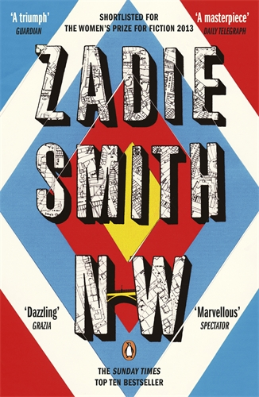

Zadie Smith
Writer

NW
Zaidi SmithNW is an experimental novel set in northwest London, following four characters grappling with class, race, and personal crises. Smith’s fragmented style mirrors the chaos of urban life, blending sharp dialogue with introspective depth. A bold exploration of identity and place, it’s a modern classic. Published by Penguin Press, an imprint of Penguin Random House, it showcases her innovative storytelling.Learn MoreBooks By Zaidie smith

About
Zadie Smith is the author of the novels White Teeth, The Autograph Man, On Beauty, NW and Swing Time; as well as a novella, The Embassy of Cambodia; three collections of essays, Changing My Mind, Feel Free and Intimations; a collection of short stories, Grand Union; and the play, The Wife of Willesden, adapted from Chaucer. She is also the editor of The Book of Other People. Zadie Smith was born in north-west London, where she still lives. The Fraud is her first historical novel.
Article Featuring Zadie Smith

The N&N Read
Where to start reading Zadie Smith
From Fantasy to Polictic, here's our guide to reading the award-winning author's work.
Read Now